研究方向 01 · 残损古籍修复研究
从残损图像到可信的历史文本
历史文献的修复同时面对视觉完整性与文本真实性。围绕这一双重目标，我们从真实碑拓的数据与评价出发，逐步推进到融合字形、语义和专家经验的自适应修复。
01
研究背景：图像中的历史证据
古籍承载历史、书法与地方文化信息，常因风化、剥蚀、墨迹不均和扫描噪声而难以辨读。智能修复需兼顾可读性、字形真实性与材料风格，为文献研究和文化传承提供可靠依据。
研究由此形成一个核心问题：如何在改善可读性的同时，维持字符结构与材料风格，使修复结果能够作为进一步辨识和校勘的辅助依据。
02
CIRI：从材料多样性到修复基准
研究首先需要回答：怎样的材料能够代表真实的修复难度？CIRI 将碑拓中的书法风格、字符结构、版式与退化类型共同纳入数据构建，使研究对象从孤立的缺损区域扩展为具有文本关联的碑拓图像。
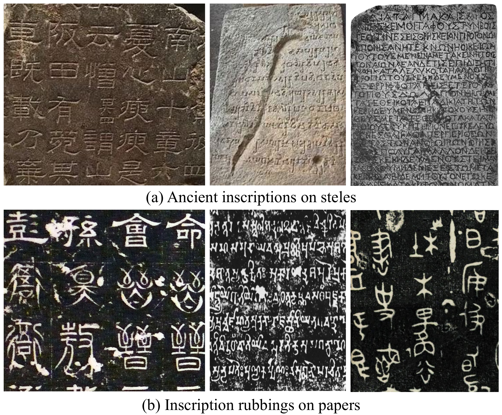
真实残损图像通常缺少严格对应的完整版本。CIRI 因而结合真实碑拓与合成配对数据：前者保留复杂的退化分布，后者提供完整—残损的对照，使图像质量与文本恢复能够接受不同层面的评价。
20,000训练样本
4,000合成测试样本
2,000真实测试样本（R-I + R-II）
CIRI 样例：残损输入与修复输出
下面四组样例展示噪声与笔画缺损对字形结构的影响，并对照 MM 方法的修复输出。右侧为方法结果，用于观察恢复效果，并非数据集的人工真值。
残损输入
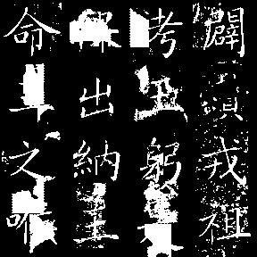
修复输出
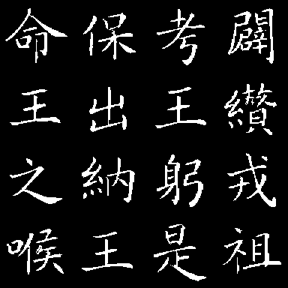
残损输入
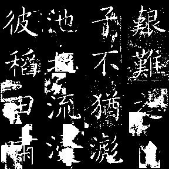
修复输出
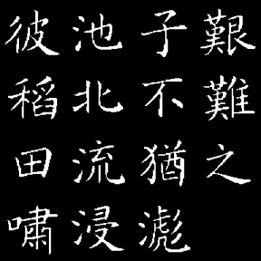
残损输入
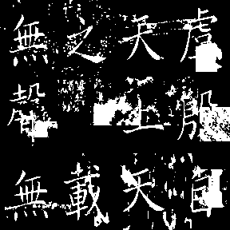
修复输出
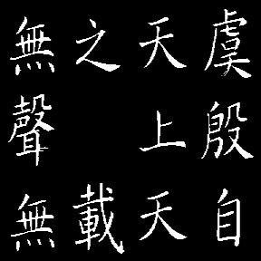
残损输入
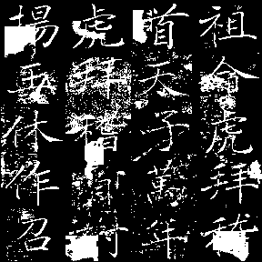
修复输出
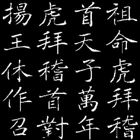
在此基础上，问题由“能否恢复图像”推进为“怎样同时保持视觉表现与文本完整性”，从而引出全局—局部协同的修复方法。
03
MM：全局恢复与局部字形协同
MM 2024 的方法将修复分解为全局恢复、文本校正与局部细化。三个模块独立训练，并通过图像与文本信息相互连接，使整体视觉恢复能够进一步受到语义与字形结构的约束。
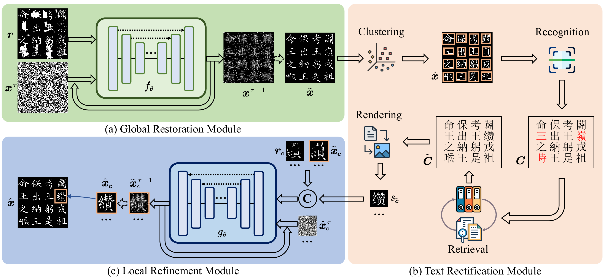
GRM · 恢复全局视觉结构
离散扩散模型首先处理二值碑拓图像，在整体层面恢复被噪声和缺损破坏的视觉结构，为后续文字分析提供输入。
TRM · 引入文本证据
对恢复结果进行字符检测、识别与排序，并结合语料检索校正文本，使图像中的候选字形与文献中的文字内容建立联系。
LRM · 细化局部字形
将校正后的字符结构与恢复后的上下文共同用于局部细化，进一步约束笔画与部件，减少仅依赖视觉补全产生的字形偏差。
这一方法将图像修复与文本校勘联系起来，但不同碑拓的退化情况并不一致。固定模块顺序难以充分适应每个字符的处理需求，进一步推动研究转向能够选择工具、调整步骤并复核结果的自适应决策。
04
EpiAgent：面向残损差异的自适应修复
EpiAgent 将这一问题表述为分层规划：以多模态感知建立残损判断，由中心规划器结合历史执行经验生成修复策略，再调用专用工具并根据结果反馈重新评估。方法的重点是对修复过程进行动态组织。
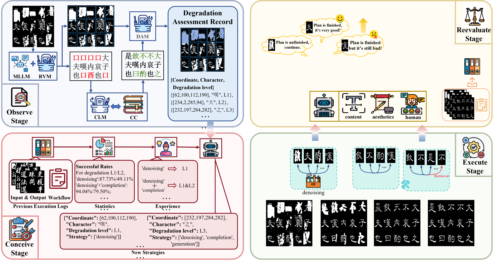
Observe · 建立残损评估记录
结合版面、字符候选与文本校正信息，定位残损区域，并记录不同字符的退化程度，为后续规划提供依据。
Conceive · 形成针对性修复策略
利用既往执行记录中的经验，为不同字符选择处理策略，将整体修复目标转化为具体的工具调用计划。
Execute · 协调专用工具
按需组合背景去噪、笔画补全、字体仿写与字符检索，使轻度噪声、局部断笔和严重缺失得到不同处理。
Reevaluate · 复核并调整路径
从文本真实性、风格一致性等角度评价结果，并结合可选的专家反馈决定结束或重新规划。
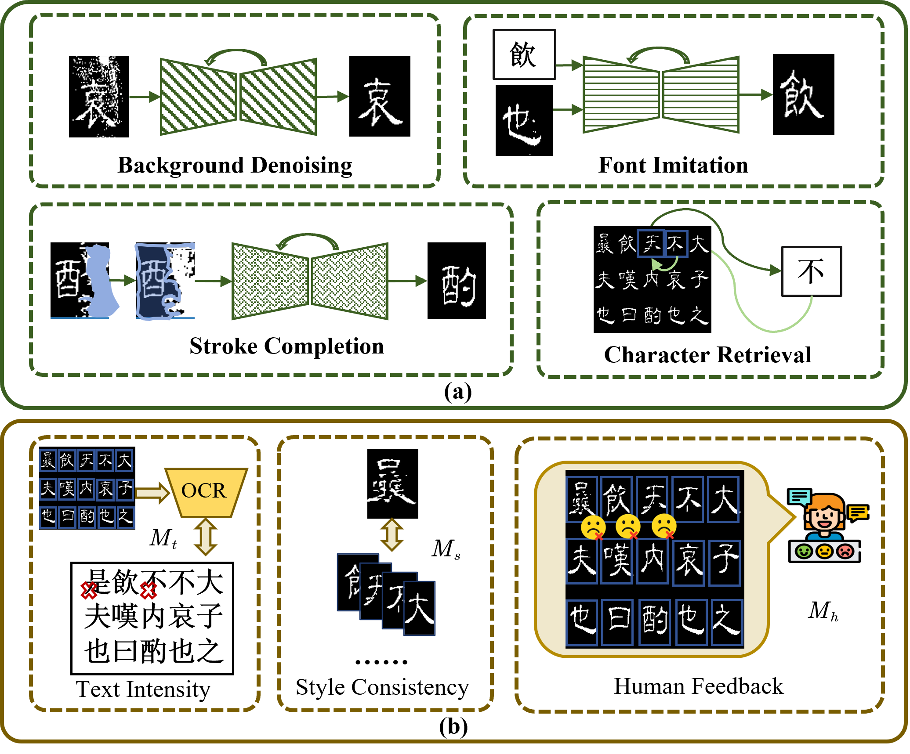
从 MM 的模块协同到 EpiAgent 的工具规划，研究持续围绕同一目标展开：使图像修复能够接受文本和字形证据的约束，并根据具体材料不断调整处理过程。
05
研究边界：从视觉可信到证据可核验
修复结果仍然是一种基于现有证据的推断。尤其在关键笔画或整字缺失时，视觉自然度不足以证明历史真实性，候选字形仍需与原始图像、上下文和相关文献相互核验。
这一研究脉络将数据基准、结构约束与迭代决策连接起来，为可追踪、可复核的人机协同修复奠定基础。
06